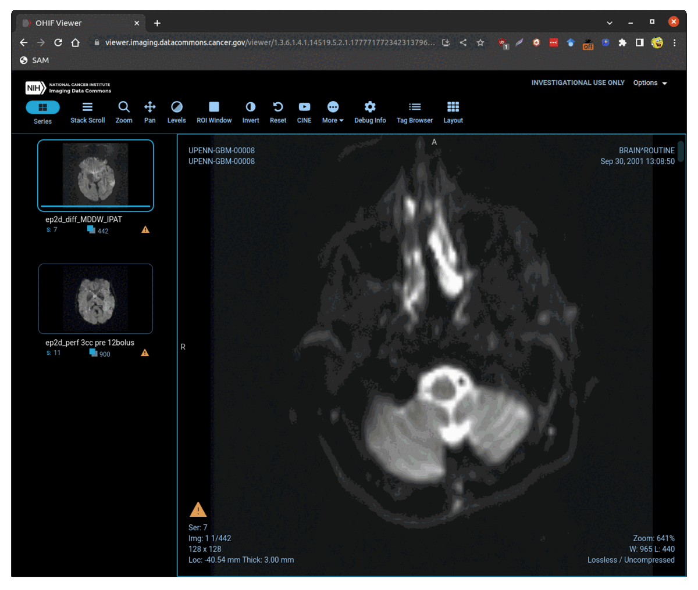

Run Meta's Segment Anything model for cornerstone.js via JavaScript injection.

Drag this: SAM into your bookmarks toolbar and visit this website. Click the SAM bookmarklet and select the region to segment.
Note: This runs well on the NCI Imaging Data Commons with the old cornerstone.js!
YOUTUBE: Watch the bookmarklet in action here.
Here is the code for the bookmarklet: https://gist.github.com/haehn/bbec8cf8442adea5bb10c08d9c3cc13f
And here is an example for a photo with croppr.js in 160 lines of code.
Thanks to Alireza Seghi and Kevin Wang for all the help!
Limitations: We are segmenting the canvas imagedata rather than the original volume (future work :)).